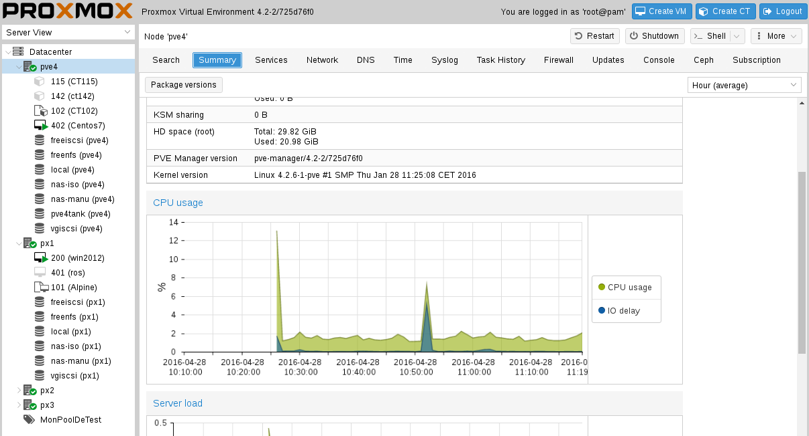

<!--
Copyright (C) 2010-2014 Proxmox Server Solutions GmbH

This software is written by Proxmox Server Solutions GmbH <support@proxmox.com>

This program is free software: you can redistribute it and/or modify
it under the terms of the GNU Affero General Public License as published by
the Free Software Foundation, either version 3 of the License, or
(at your option) any later version.

This program is distributed in the hope that it will be useful,
but WITHOUT ANY WARRANTY; without even the implied warranty of
MERCHANTABILITY or FITNESS FOR A PARTICULAR PURPOSE.  See the
GNU Affero General Public License for more details.

You should have received a copy of the GNU Affero General Public License
along with this program.  If not, see <http://www.gnu.org/licenses/>.
-->


<!doctype html>
<html lang="en">

<head>
<meta charset="utf-8">

<title>ZFS and Corosync Cluster: Advanced Features of Proxmox VE - linuxwochen 2016 Wien</title>
<meta name="apple-mobile-web-app-capable" content="yes" />
<meta name="apple-mobile-web-app-status-bar-style"
	content="black-translucent" />

<meta name="viewport"
	content="width=device-width, initial-scale=1.0, maximum-scale=1.0, user-scalable=no, minimal-ui">

<link rel="stylesheet" href="css/reveal.css">
<link rel="stylesheet" href="css/theme/beige.css" id="theme">

<!-- Code syntax highlighting -->
<link rel="stylesheet" href="lib/css/zenburn.css">

<!-- Printing and PDF exports -->
<script>
			var link = document.createElement( 'link' );
			link.rel = 'stylesheet';
			link.type = 'text/css';
			link.href = window.location.search.match( /print-pdf/gi ) ? 'css/print/pdf.css' : 'css/print/paper.css';
			document.getElementsByTagName( 'head' )[0].appendChild( link );
		</script>
</head>

<body>

	<div class="reveal">

		<!-- Any section element inside of this container is displayed as a slide -->
		<div class="slides">
			<section data-markdown data-separator="---">
				<script type="text/template">
#ZFS and Corosync Cluster


*Advanced Features of Proxmox VE*
---

## Who am I 
 * French, living in Austria
 * Debian Maintainer since 5 years (through games packaging)
 * Longtime sysadmin, got bored of creating user accounts, now developer at
Proxmox Server Solutions
---

## What is Proxmox VE ?
 * 8 years old platform for managing VMs and containers
 * Perl library on top of KVM / LXC / ZFS / Ceph which exposes a REST API
 * REST API is consumed by web interface and command line tools
 * Based on Debian Stable, AGPLv3 licensed
 * Commercial support available for entreprise customers
 * 30 000 forum members, 6 000 entreprise customers
---

## web gui as a single page AJAX application
</img>
---

## Tries not to be over elitist
sometimes command-line has its limit
(example from kvm wiki)

    qemu-kvm -m 16G -smp 8
    -device virtio-net-pci,netdev=net0\
    -netdev tap,id=net0,script=/etc/qemu-ifup\
    -drive file=/var/lib/libvirt/images/rhel7.1.img\
    -if=virtio -nographic
---

## Ok not l33t enough ?
(real life qemu-kvm process)

    /usr/bin/kvm -id 100 
    -chardev socket,id=qmp,path=/var/run/qemu-server/100.qmp,server,nowait 
    -mon chardev=qmp,mode=control -pidfile /var/run/qemu-server/100.pid -daemonize
    -smbios type=1,uuid=267856a4-57e4-4ff4-acd3-2108e50983b2
    -name FreeNAS -smp 2,sockets=1,cores=2,maxcpus=2 -nodefaults
    -boot menu=on,strict=on,reboot-timeout=1000
    -vga cirrus -vnc unix:/var/run/qemu-server/100.vnc,x509,password
    -cpu kvm64,+lahf_lm,+sep,+kvm_pv_unhalt,+kvm_pv_eoi,enforce -m 1024 -k en-us
    -device pci-bridge,id=pci.2,chassis_nr=2,bus=pci.0,addr=0x1f -device pci-bridge,id=pci.1,chassis_nr=1,bus=pci.0,addr=0x1e
    -device piix3-usb-uhci,id=uhci,bus=pci.0,addr=0x1.0x2 -readconfig /usr/share/qemu-server/pve-usb.cfg 
    -device usb-tablet,id=tablet,bus=uhci.0,port=1 -device usb-host,vendorid=0x8564,productid=0x1000
    -chardev socket,id=serial0,path=/var/run/qemu-server/100.serial0,server,nowait -device isa-serial,chardev=serial0
    -device virtio-balloon-pci,id=balloon0,bus=pci.0,addr=0x3
    -iscsi initiator-name=iqn.1993-08.org.debian:01:6cf9484912 -drive if=none,id=drive-ide2,media=cdrom,aio=threads
    -device ide-cd,bus=ide.1,unit=0,drive=drive-ide2,id=ide2,bootindex=200
    -drive file=/var/lib/vz/images/100/vm-100-disk-1.raw,if=none,id=drive-virtio0,cache=unsafe,format=raw,aio=threads,detect-zeroes=on
    -device virtio-blk-pci,drive=drive-virtio0,id=virtio0,bus=pci.0,addr=0xa,bootindex=100
    -netdev type=tap,id=net0,ifname=tap100i0,script=/var/lib/qemu-server/pve-bridge,downscript=/var/lib/qemu-server/pve-bridgedown,vhost=on
    -device virtio-net-pci,mac=B2:AE:F1:97:36:52,netdev=net0,bus=pci.0,addr=0x12,id=net0,bootindex=300
---

## try not to be over architectured
</img>
---

 * key/value configs file with unix-like syntax

```
# qm config 200
boot: cd
bootdisk: virtio0
cores: 2
description: win2012manu.local
ide0: nas-manu:200/vm-200-disk-3.raw,size=40G
memory: 2048
name: win2012
net0: e1000=3A:33:39:66:31:35,bridge=vmbr0
numa: 0
onboot: 1
ostype: win8
smbios1: uuid=e5d47099-982d-4998-b85d-83ebbec8bab5
sockets: 1
```
 * man pages for every command

```
vzdump(1) Proxmox Documentation vzdump(1)
NAME
	vzdump - backup utility for virtual machine

SYNOPSIS
	vzdump help

	vzdump {<vmid>} [OPTIONS]
	<vmid>     string

		The ID of the VM you want to backup.

	-all      boolean   (default=0)

	Backup all known VMs on this host.
```

---
## What is ZFS

### * Designed by Sun, started production in 2006
### * Aims to replace raid controller, software raid, LVM, file system (Ext4/UFS)
### * Available in OpenSolaris, FreeBSD and Linux, via compatibility layer

---

## Raid controller
### annoying raid controllers
</img>
 * proprietary firmware
 * need to be flashed over DOS ( thanks FreeDOS !)
 * what happens if controller dies ?
 * prone to 'hardware envy'
---

## Fewer layers than usual solutions
### typical Linux server has
hard disk <-> soft or hard raid <-> PV <-> VG <-> raw disk image in Logical Volume
### zfs has
hard disk <-> ZFS pool <-> raw disk image in ZVOL

---

## "rampant layer violation"
but faster software raid recovery,
faster snapshots,
because the underlying layer *knows* which blocks are really used 
---

## one thing raid controllers got right: BBU
 * can be replaced with a Single Intent Log SSD device with capacitor
 * for instance Intel S3500:

*There was only one drive that survived the torturing: the Intel S3500.
After more than 6,500 power-cycles, not a single byte of data was lost*
( http://lkcl.net/reports/ssd_analysis.html )
</img>
---

## good use case for storing VMs

 * ZFS with ZVOLs and thin provisioning
 * can add SSDs as write cache (SLOG) or read cache (ARC2 cache)
 * zfs send and zfs receive for backing up zvols
---

## example use in Proxmox VE

### create a pool

```
zpool create  <pool-name> \
mirror <device1> <device2> mirror <device3> <device4>
```

### add via Gui

</img>
---

## Corosync 
Standard cluster membership component

<*insert here a picture of a server rack, if possible everything black*>

--- 
### Why do we want a cluster by the way ? 
 * From a single web interface, we want to administrate a group of servers.
 * Goal is clear but what happens if in my 5 cluster group, three of them are 
down and I want to change a groupwide setting ( default proxy, keyboard conf,
backup plan ...) 
 * Need a way to check if I am entitled to do so.

---
### Corosync only cares about: 
 * how many servers in my group currently ?
 * send *this* message to all group members
 * are there enough servers to make operating decisions ?
Operating decision are done by a *resource manager*

---
### Implementation overview:
 * each server joins a multicast group
 * pass a token to its neighbour
 * if no answer, then kicked out of the group
 * modifications allowed to cluster objects if *quorum* is reached

Just like in rock bands, if you don't show up  they kick you out.

---
Verify cluster status in the shell

```
root@px2:~# pvecm status


Quorum information
__________________
Date:             Tue Mar  8 14:41:22 2016
Quorum provider:  corosync_votequorum
Nodes:            4
Node ID:          2
Ring ID:          6464
Quorate:          Yes

Votequorum information
______________________
Expected votes:   4
Highest expected: 4
Total votes:      4
Quorum:           3  
Flags:            Quorate 

Membership information
_______________________
    Nodeid      Votes Name
         1          1 px1-corosync
         2          1 px2-corosync (local)
         3          1 px3-corosync
         4          1 pve4-corosync
```

Now from any of these fours servers, you can create, destroy VMs, configure
firewall, backups 

---
### Managing resources in the cluster
 * Pacemaker uses XML and special tools for its CIB 
 * PVE has its own cluster filesystem: *pmxcfs*
 * Corosync notifies that the quorum is there ( you're "quorate") then PVE
starts a cluster filesystem

---
### Overview of the Proxmox Cluster Filesystem

* starts an memory based FS mounted in /etc/pve
* writes are replicated to all cluster members via corosync messaging
* copy of the cluster configuration in a sqlite database
* allows you to use standard unix tools ( grep, vi) to edit each object

```
root@px1:~# mount | grep /etc/pve
/dev/fuse on /etc/pve type fuse (rw,nosuid,nodev,relatime, ...)
```

```
grep ostype /etc/pve/nodes/*/qemu-server/*
/etc/pve/nodes/pve4/qemu-server/401.conf:ostype: win7
/etc/pve/nodes/pve4/qemu-server/402.conf:ostype: l26
/etc/pve/nodes/px2/qemu-server/200.conf:ostype: win8
/etc/pve/nodes/px2/qemu-server/201.conf.18455.tmp:ostype: l26
```
---

### the result: a multi master cluster
you can administrate it from every node member
</img>
---


				</script>
			</section>
		</div>

	</div>

	<script src="lib/js/head.min.js"></script>
	<script src="js/reveal.js"></script>

	<script>
			
			// Full list of configuration options available at:
			// https://github.com/hakimel/reveal.js#configuration
			Reveal.initialize({
				controls: true,
				progress: true,
				history: true,
				center: true,

				transition: 'slide', // none/fade/slide/convex/concave/zoom

				// Optional reveal.js plugins
				dependencies: [
					{ src: 'lib/js/classList.js', condition: function() { return !document.body.classList; } },
					{ src: 'plugin/markdown/marked.js', condition: function() { return !!document.querySelector( '[data-markdown]' ); } },
					{ src: 'plugin/markdown/markdown.js', condition: function() { return !!document.querySelector( '[data-markdown]' ); } },
					{ src: 'plugin/highlight/highlight.js', async: true, condition: function() { return !!document.querySelector( 'pre code' ); }, callback: function() { hljs.initHighlightingOnLoad(); } },
					{ src: 'plugin/zoom-js/zoom.js', async: true },
					{ src: 'plugin/notes/notes.js', async: true }
				]
			});
			
		</script>

</body>
</html>
